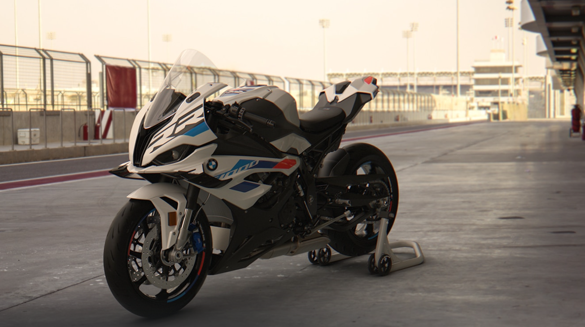
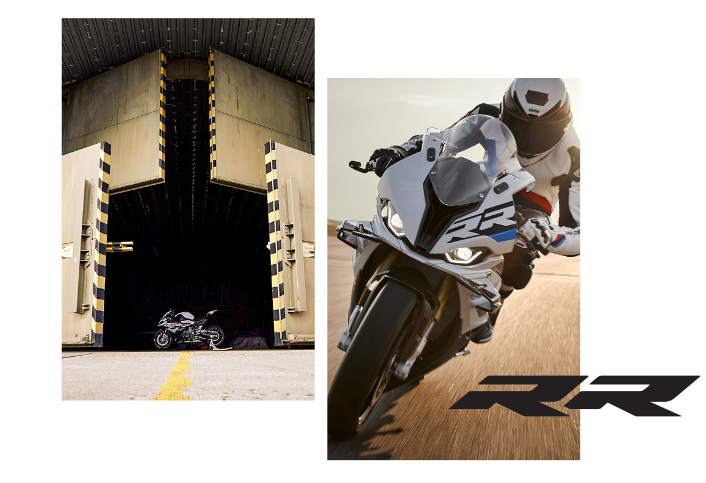
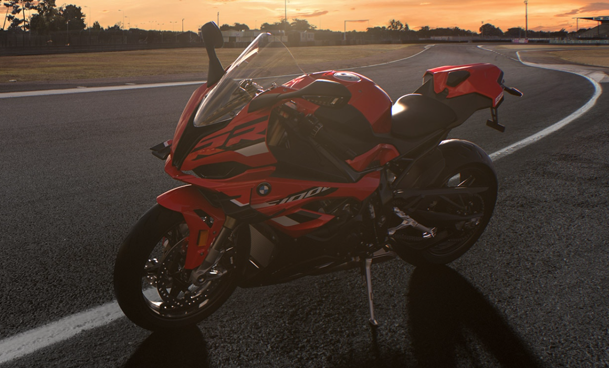
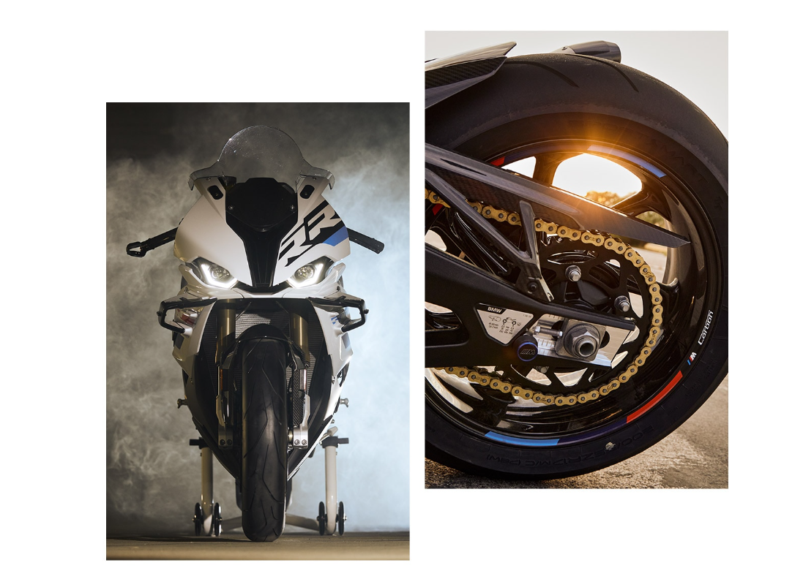

|  | ||||
| Yakıt Tipi | Güç | Azami Hız | ||
| Benzin | 210 bg | 303 | ||
BMW S 1000 RR EN İYİLERİN SUPERBİKE’I


Tutku kalbin attığı yerdedir ve o kalp heyecanla atıyor! Zincirlerinden boşalan tutku: Yarış pistlerinden edindiğimiz tüm deneyimi bir kez daha RR'ın yüksek performanslı BMW ShiftCam özellikli dört silindirli motoruna aktardık. Motor artık 3 bg daha fazla güçle toplam 210 bg (154 kW) değerine ulaştı. M RR modelinden alınan hava giriş deliği özellikle iyi bir hava tedariki ve daha iyi yük değişimi sağlıyor. Yeni kanal geometrisine sahip silindir kafası ve takviyeli yatak braketleri de M RR modelinden geliyor. Standart Pro vites değiştirme asistanını da iyileştirdik. Sistem artık aşırı vites yükseltme ve aşırı vites düşürme ile vites değişimlerine izin veriyor ve daha fazla vites değiştirme hassasiyeti için iyileştirilmiş yük değişimi sönümlemeyi mümkün kılıyor. Zincir halkası da artık daha fazla dişe sahip; tıpkı M RR modelinde olduğu gibi 45 yerine 46 dişiyle doğrudan daha fazla güç sağlıyor.
Sportif karakter baskın genlerle bir sonraki nesle geçiyor Süper sportif ve ödün vermez şekilde kompakt. RR'ın bu temel tasarım değerlerini koruduk. Üstelik aerodinamik olarak iyileştirilen ön cam ve etkileyici LED tasarımıyla farlardan oluşan ön bölümden, kanatçıkların yer aldığı yan kaplama panelleri ve kısa, dinamik arka bölüme kadar bunları daha da iyileştirdik. Buna ek olarak kolayca sökülebilir plaka taşıyıcı ve yolcu selesi için opsiyonel kuyruk yükselti kapağı, RR'ın tasarımında en ince detayına kadar performansa odaklandığımızı kanıtlıyor.

| İLETİŞİM & DESTEK | HIZLI ERİŞİM |
| İletişim | Model Listesi |
| Geri Dönüşüm | Kataloglar |
| Gönüllü Geri Çağırma | Ayın Özel Teklifleri |